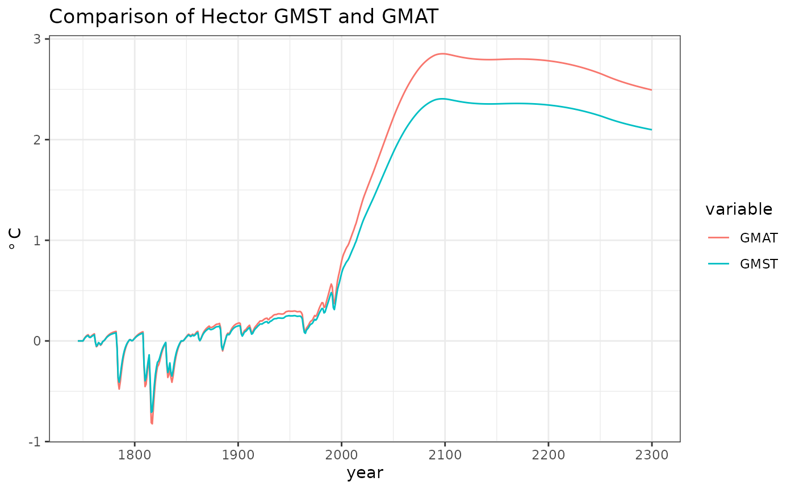

Example: Calculating GMST from GMAT in Hector
Leeya Pressburger
2021-08-18
Source:vignettes/articles/ex_GMAT-GMST.Rmd
ex_GMAT-GMST.RmdIntroduction
The global mean surface temperature (GMST) is the average of the air temperature 2 meters over the Earth’s surface and the temperature at the surface of the ocean. 1 This is a very useful metric for observing global temperature changes. Although changes in GMST are relatively small in terms of numbers, it takes a great deal of heat to warm the entire planet by even a fraction of a degree. Measurements of the temperature changes provide evidence for anthropogenic climate change.
Both GMST and global mean air temperature (GMAT) are reported as Hector outputs. GMAT is the air temperature measured 2 meters above the ground and is what is presented in a daily weather report.2 This vignette demonstrates how to set up the calculate GMST and compares the two temperature results.
(Note that Hector assumes that land air temperature and land surface temperature are equivalent.3)
Find GMST
GMST can be calculated from Hector outputs by computing a weighted sum of the land air and ocean surface temperatures using the following equation:
$ = ( * ) + ( * (1 - )) $
In Hector, land air temperature is represented by
land_tas (LAND_TAS()) and ocean surface
temperature is represented by sst (SST()).
These components stem from the variable tas
(GLOBAL_TAS()), which is how Hector stores GMAT.
Note that the reason that the same variable is represented in two
different ways is due to the interaction between the R interface and the
underlying C++ model. For example, LAND_TAS() is the
function in R that returns a string message such as
land_tas, which is then passed into the base C++ Hector
model. This method is user-friendly as spelling/capitalization is not an
issue and developer-friendly as string in C++ can be changed without
changing the R user interface.
flnd <- 0.29 # fractional land area, a constant in Hector
hector_output <- fetchvars(core, 1745:2300, vars = c(LAND_TAS(), SST(), GLOBAL_TAS()))
# Get the variables we want and corresponding years/value
output <- subset(hector_output, variable %in% c(LAND_TAS(), SST()))
output <- subset(output, select = c(year, variable, value))
# Reorder and clean up data
output <- reshape(output, direction = "wide", idvar = "year", timevar = "variable")
names(output) <- gsub("value.", "", names(output))
# Conversion equation
output$GMST <- with(output, (land_tas * flnd + sst * (1 - flnd)))
global_surface_temp <- subset(output, select = c(year, GMST))
# Organize final data, year and corresponding GMST
names(global_surface_temp)[names(global_surface_temp) == "output$year"] <- "year"
names(global_surface_temp)[names(global_surface_temp) == "GMST"] <- "value"
variable <- rep("GMST", times = 556)
variable <- as.data.frame(variable)
global_surface_temp <- cbind(global_surface_temp, variable)
# Rename Hector's variable for GMAT
global_air_temp <- subset(hector_output, variable == GLOBAL_TAS())
global_air_temp <- subset(global_air_temp, select = c(variable, year, value))
global_air_temp$variable <- "GMAT"Plot results
The following plot shows GMST and GMAT over time. We see that in about 2000, GMAT begins to increase more quickly than GMST. By 2300, there is a significant gap between the two; GMAT is higher than GMST as GMAT is responding more quickly to anthropogenic forcing. This makes sense as GMST accounts for heating of the ocean surface which warms more slowly than the atmosphere.
data <- rbind(global_surface_temp, global_air_temp)
ggplot(data) +
geom_line(aes(year, value, color = variable)) +
theme_bw() +
labs(y = expression(degree ~ "C"),
title = "Comparison of Hector GMST and GMAT")
Then, to highlight the gap between the two temperatures, we can plot the difference.
GMST_d <- subset(data, variable == "GMST")
GMAT_d <- subset(data, variable == "GMAT")
GMAT_d$variable <- "GMAT - GMST"
GMAT_d$value <- GMAT_d$value - GMST_d$value
ggplot(GMAT_d) +
geom_line(aes(year, value, color = variable)) +
theme_bw() +
labs(y = expression(degree ~ "C"),
title = "Differences in temperature over time")Remember to shut down the core.
shutdown(core)## Hector core (INACTIVE)